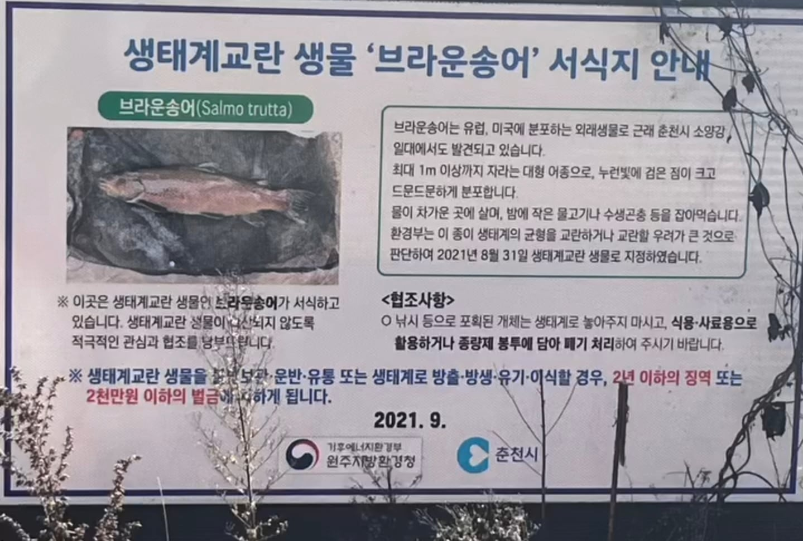

베스는 피 잘 빼고 껍질 잘 벗기면 맛있다고 하더라 비린내가 거기서 많이 난다고 함 근데 인식이 이미 망해서 굳이 그렇게까지 해서 먹는 사람은 적은듯
3번항목은 존재하지않습니다
방파제에 무늬나 삼치같은거 들어오면 발판좋은데 사람 고기 다 많음.
저 브라운송어는 의도적으로 들여온 케이스인가 궁금하네
100퍼임 민물고기는 자연확산으로 대륙을 넘어가는게 불가능함
브라운송어: 나는 할 수 있다!!나는 다르다!!
송어라 딱 봐도 맛있을거 같은데.
사람이 풀었겠지.
송어류면 스푼 써야되나? 저렇게많으면 낚시할맛 날거같긴한데
그런데 보통 강이나 그런곳은 낚시 금지 아닌가?
생물보전지역/ 도심 제외한 곳은 대부분 가능
가물치를 풀어라
가물치랑 서식영역이다름
요즘 가물치 풀어서 베스 블루길 학살한다는데 저긴 못하나?
가물치는 유속 느린곳에 있고 송어는 빠른곳에 있어서 서식지가 달러
오호 그건 몰랐네
저거 맛있냐? 그럼 인간을 풀어라
연어친척임 맛남
송어면 맛있을 걸
https://youtu.be/Utby5-WAQ3w?t=601&si=r2t3ColQWT6zY9gM
진석기가 이미 매운탕 끓여서 맛있게 잡수심
전기로 지져버리자
강에 살던 천연기념물 : ㅅㅂ 피아식별좀
저거 스타듀밸리에서 많이 낚아본놈 같은데
역시 멸종을 결정짓는건 맛이지
(주의) 브라운송어라는 생물은 존재하지 않습니다.
만약 브라운송어가 서식한다는 내용을 보셨다면, 즉시 그 자리를 피하시기 바랍니다.
송어 맛있다던데 요새도 나오나
애초에 낚시꾼들은 맛때메 잡는게 아님.
나만 해도 생산 잡은거 셀수도 없지만 다 놔줌.
못먹는 생선 베스낚시가 우리나라에서 장르를 이룰 정도인데 말 다했지 뭐